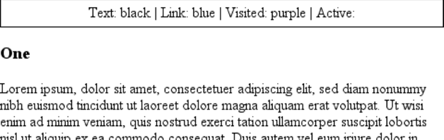

CSS权威指南（3rd）笔记-查缺补漏7 - 列表和生成内容
在css布局领域，列表是很有意思的一个方面。列表中的项其实就是块框，不过比起平常稍微多了一点，多出的这部分不属于文档布局，而只是“挂”在一边。对于一个有序列表，额外的这部分包含一系列递增的数字（或字母），这些数字（或字母）由用户代理计算，并且主要由用户代理格式化，而不是由创作人员完成。按文档结构的“指示”，用户代理会生成这些数字并提供基本表示。
这种内容生成在CSS1中是无法描述的，所以CSS1也无法控制，不过CSS2引入了一些特性，可以描述这种列表项编号，因此，现在css允许创作人员定义自己的计数模式和格式，而且可以将这些计数器与任何元素关联，而不只是有序列表。另外，利用这种基本机制还有可能向文档中插入其他类型的内容，包括文本串。属性值，甚至外部资源。所以，完全可以使用css在设计中插入链接图标、编辑符号等，而不必创建额外的标记。
要了解所有这些列表选项应如何加以利用，先来讨论基本的列表样式，然后再讨论内容和计数器的生成。
列表
从某种意义上讲，不是描述性文本的任何内容都可以认为是列表。由于形式如此多样，这使得列表相当重要，所以说，css中列表样式不太丰富确实是一大憾事。
要影响一个列表的样式，最简单（同时支持最充分）的办法就是改变其标志类型。例如，在一个无序列表中，列表项的标志（marker）是出现在各列表项旁边的圆点。在有序列表中，标志可能是一个字母、数字或另外某种计数体系中的一个符号。甚至可以将标志替换为图像。所有这些都可以使用不同的列表样式属性完成。
列表类型
要修改用于列表项的标志类型，可以使用属性list-style-type。
- CSS2.1 值：disc | circle | square | decimal | decimal-leading-zero | lower-roman | upper-roman | lower-greek | lower-latin | upper-latin | armenian | georgian | none | inherit
- CSS2 值：disc | circle | square | decimal | decimal-leading-zero | upper-alpha Ilower-alpha | upper-roman | lower- roinan | lower-greek | hebrew | armenian | georgian | Gjk-ideographic | hiragana | katakana | hiragana-iroha | none | inherit
- 初始值：disc
- 应用于：display 值为list-item的元素
- 继承性：有
CSS2.1 中的list-styla-type属性关键字
| 关键字 | 效果 |
|---|---|
| disc | 使用一个实心圔作为列表项标志 |
| circle | 使用一个空心圆作为列表项标志 |
| square | 使用一个方块（实心或空心）作为列表项标志 |
| decimal | 1,2,3,4,5，…… |
| decimal-leading-zero | 01,02,03,04,05，…… |
| upper-alpha | A, B, C, D, E,…… |
| lower-alpha | a, b, c, d, e,…… |
| upper-roman | I. II, III, IV, V, |
| lower-roman | i, ii, iii. iv, v,…… |
| lower-greek | 传统小写希腊符号 |
| armenian | 传统亚美尼亚序号 |
| georgian | 传统乔治序号 |
| none | 不使用标志 |
注：CSS2中其他关键字但已被CSS2.1去除
list-style-type属性（以及所有其他与列表相关的属性）只能应用于display值为list-item的元素，不过CSS无法区别有序列表项和无序列表项。因此，完全可以设置一个有序列表使用实心圆而非数字作为列表项标志。实际上，list-style-type的默认值就是disc，所以可以得出结论，如果没有显式地声明其他列表类型，所有列表（有序或无序）对各列表项都会使用实心圆作为标志。这是合理的，不过最终要由用户代理来决定。尽管用户代理没有预定的规则，如{list-style-type: decimal;}，但它可能会禁止对无序列表使用有序标志，反之亦然。不过不能依赖于此，所以一定要当心。
对于hebrew和georgian等CSS2值，CSS2规范并没有明确地指出这些计数体系如何工作，也没有说明用户代理应当如何处理。这种不确定性导致这些值未能广泛实现。
如果想完全禁止显示标志，只能使用值none。none会导致用户代理在原本放标志的位置上不显示任何内容，不过它不会中断有序列表中的计数。因此，以下标记会得到如图1所示的结果：1
2
3
4
5
6
7
8
9ol li {list-style-type: decimal;}
li.off {list-style-type: none;}
<ol>
<li>Item the first
<li class="off">Itera the second
<li>Item the third
<li class="off">Item the fourth
<li>Itera the fifth
</ol>
list-style-type属性可以继承，所以如果希望嵌套列表中使用不同样式的标志，可能需要单独定义。也许还必须显式地声明嵌套列表的样式，因为用户代理的样式表可能已经有定义。例如，假设用户代理定义了以下样式：1
2
3ul {list-style-type: disc;}
ul ul {list-style-type: circle;}
ul ul ul {list-style-type: square;}
如果是这样（而且很可能是这样），就必须声明你自己的样式来覆盖用户代理的样式，仅仅使用继承是不够的。
列表项图像
有时，常规的标志还不够。你可能想对各标志使用一个图像，这可以利用list-style-image属性做到。
下面介绍这个属性如何使用：ul li {list-style-image: url(ohio.gif);}

当然，对于使用的图像要非常小心，从图3所示的例子可以清楚地看出这一点：ul li {list-style-image: url(big-ohio.gif);}
通常可以提供一个作为“后路”的标志类型以应付意外情况，如图像未能加载、被破坏或者是某种用户代理无法显示的格式等等，这往往是一个好主意。为此可以为列表定义
一个后备的list-style-type:1
2
3
4ul li {
list-style-image: url(ohio.png);
list-style-type: square;
}
使用list-style-image时，还可以将其设置为默认值none。这是一个很好的实践做法，因为list-style-image是可以继承的，所以所有嵌套列表都会继续使用该图像作为标志，除非你采取措施避免这种情况发生：1
2ul {list-style-image: url(ohio.gif); list-style-type: square;}
ul ul {list-style-image: none;}
由于嵌套列表继承了列表项类型square，但是已经设置为不使用图像作为标志，所以嵌套列表会使用方块标志，如图4所示。
列表标志位置
CSS2.1中还可以做一件事来影响列表项的外观，即确定标志出现在列表项内容之外还是在内容内部。这是利用list-style-position完成的。
如果标志的位置设置为outside（默认值），则显示与一般Web上列表项的显示无二。不过，如果你需要一个稍微不同的外观，可以把这个值设置为inside，将标志拉向内容，这会使标志放在列表项的内容“以内”。对于具体如何做没有明确定义，不过图5显示了一种可能的做法：1
2li.first {list-style-position: inside;}
li.second {list-style-position: outside;}

简写列表样式
为简单起见，可以将以上3个列表样式属性合并为一个方便的属性：list-style。例如：li (list-style: url(ohio.gif) square inside;}
list-style的值可以按任何顺序列出，而且这些值都可以忽略。只要提供了一个值，其他的就会填入其默认值。
生成内容
CSS2和CSS2.1包含一个称为生成内容（generated content）的新特性。这是指由浏览器创建的内容，而不是由标志或内容来表示。
例如，列表标志就是生成内容。在列表项的标记中，没有任何部分直接表示这些标志，而且作为创作人员，你不必在文档内容中写上标志。浏览器会自动生成合适的标志。对于无序列表，标志是某种圆点，如空心圆、实心圆或方块。对于有序列表，标志则是一个计数器，对每个后续列表项不断增1。
要理解如何影响列表标志，以及如何定制有序列表（或任何元素！）的计数，必须先了解更基本的生成内容。
插入生成内容
为了向文档中插入生成内容，可以使用：before和：after伪元素。这些伪元素会根据content属性把生成内容放在一个元素内容的前面或后面（content属性见下一节的介绍）。
例如，你可能希望所有超链接前面增加前缀文本“(link)”加以标志，从而在打印时更明显。可以利用以下规则来做到，其效果如图11所示：a[href]:before {content:"(link)";}
注意，生成内容和元素内容之间没有空格。这是因为前例中content的值未包含空格。可以将这个声明修改如下，确保生成内容和实陈内容之间有一个空格：a[href]:before {content:"(link )";}
这个差别很小，但很重要。
采用类似方式，还可以在指向PDF文档的链接最后插入一个小图标。为此，规则可能如下：a.pdf-doc:after {content: url(pdf-doc-icon.gif)}
假设希望进一步设置这些链接的样式，再增加一个边框。可以利用以下第二个规则完成：a.pdf-doc {border: 1px solid gray;}
这两个规则的结果见图12所示。
类似于图11中链接下划线已经延伸到“(link)”文本的下面，可以注意到这里链接的边框已经扩展到包围了生成内容。之所以会这样，是因为生成内容放在元素框的内部。在CSS2.1中，除了列表标志，无法把生成内容放在元素框之外„
你可能认为定位能解决问题，不过CSS2和CSS2.1明确地禁止浮动或定位:before和:after内容，还禁止使用列表样式属性以及表属性。另外还有以下限制：
- 如果:before或:after选择器的主体是块级元素，则display属性只接受值none、inline、block和marker。其他值都处理为block。
- 如果:before或:after选择器的主体是一个行内元素，属性display只能接受值none和inline。所有其他值都处理为inline.
例如，考虑以下规则：em:after {content:"(!)"; display: block;}
由于em是一个行内元素，生成内容不能是块级内容。因此，值block重置为inline。不过，在下一个例子中，生成内容被置为块级内容，因为目标元素就是块级元素：h1:before (content:"New Section"; display: block; color: gray;}
其结果见图13。
生成内容有一个很有意思的方面，它由与之关联的元素继承值。因此，给定以下规则，生成文本将是绿色，与段落内容的颜色相同：1
2p {Color: green;}
p:before {content:":::";}
如果希望生成文本是紫色，只需一个简单的声明：p:before (content:":::"; color: purple;}
当然，这种值继承只适用于可继承的属性。特别指出这一点是因为这会影响达到某些效果的方式。请考虑以下规则：1
2h1 {border-top: 3px solid black; padding-top: 0.25em;}
h1:before {content:"New Section"; display: block; color: gray; border-bottom: 1px dotted black; margin-bottom: 0.5em;}
由于生成内容放在h1的元素框内部，它会放在元素上边框的下面，而且在所有内边距以内，如图14所示。
生成内容（作为块级内容）的下外边距将元素的实际内容向下推了O.5em。不论怎样讲，此例中生成内容的效果就是把hi元素分成了两部分：生成内容框和实际内容框。这是因为生成内容声明为display: block。如果将其修改为display: inline，效果则如图15所示：
h1 {border-top: 3px solid black; padding-top: 0.25em;} h1:before {content:”New Section”; display: inline; color: gray; border-boctom: 1px dotted black; margin-bottom: 0.5em;}
注意边框如何放置，还要注意上内边距仍保留。生成内容的下外边距也保留，不过由于生成内容现在是行内内容，而行内元素的外边距不影响行高，所以视觉上外边距不起作用。
有了关于生成内容的基础知识后，下面进一步讨论如何指定具体的生成内容。
指定内容
要生成内容，需要有一种办法来描述生成的内容。前面已经看到，这是利用content属性处理的，不过关于这个属性还有更多内容，前面了解的还远远不够。
content
- 值：
Normal|[<string>| <uri>| <counter>| attr (<identifier>)| open-quote | close-quote | no-open-quote | no-close- quote ]+ | inherit - 初始值：normal
- 应用于：:before 和:after 伪元素
- 继承性：无
- 计算值：对于
<uri>值，为绝对URI，对于属性引用，则为结果串，否则，根据指定确定
前面已经看到了串和URl值的使用，计数器将在本章后面介绍。在介绍attr()和quote 值之前，我们将更详细地讨论串和URI。
串值会原样显示，即使其中包含某种标记也不例外。因此，以下规则会原样插入到文档中，如图16所示：
h2:before {content:”0026para;“; color: gray;>
这说明，如果你希望生成内容中有一个换行（回车），不能直接使用
，而要使用串\A，这是CSS表示换行的方法（由Unicode换行符得来，其十六进制位置是A）。相反，如果有一个很长的串，需要把它分成多行则要用\符号对换行符转义。以下规则对此做了描述，结果见图17所示：1
2
3
4h2:before {
content:"We insert this text before all H2 elements because \ it is a good idea to show how these things work. It may be a bit long \ but the point should be clearly made.";
color: gray;
}
还可以使用转义来指示十六进制Unicode值，如\00AB。
利用URI值，只需指向一个外部资源（一个图像、视频、声音剪辑或用户代理支持的其他任何资源），然后插入到文档中适当的位置。如果用户代理出于某种原因不支持所指定的资源，例如你想向浏览器插入一个SVG图像，但这个浏览器无法识别SVG，或者向一个要打印的文档中插入视频，此时就要求用户代理完全忽略这个资源，不插入任何内容。
插入属性值
有些情况下，你可能想取一个元素的属性值，使之作为文档显示的一部分。举一个简单的例子，可以把每个链接的href属性值直接放在链接的后面，如下：a[href]:after {content: attr(href);}
这也会导致生成内容与具体内容冲突的问题。为解决这个问题，可以向声明增加一些串值。其结果如图18所示：a[href]:after {content:"[" attr(href)"]";}
例如，这对于打印样式表可能很有用。所有属性值都可以作为生成内容插入：alt文本、class或id值，以及任何属性。创作人员可能会明确显示块引用的引用信息，如下:blockquote:after {content:"("( attr(cite)")" display: block; text-align: right; font-style: italic;}
对此，利用更复杂的规则还可以显示一个法律文档的文本和链接颜色值：1
2
3
4body:before {content:"Text:" attr(text)" I Link:" attr(link)
"I Visited:" attr(vlink)" I Active:" attr(alink);
display: block; padding: 0.33em;
border: 1px solid black; text-align: center;}
注意，如果一个属性不存在，会在相应位置插入一个空串。正如图19所示，在此向一个文档应用以上示例规则，该文档中body元素没有alink属性。

可以看到，文本“Active:”（包括后面的空格）确实插入到了文档中，不过后面什么也没有。如果只想在属性存在时才插入该属性的值，这就很方便。
生成引号
生成内容有一种特殊形式，即引号，CSS2.X提供了一种有效的方式来管理引号及其嵌套行为。由于提供了open-quote等成对的content值以及属性quotes，使得生成引号的管理成为可能。
quotes
- 值：
[<string><string>]+ | none | inherit - 初始值：取决于具体的用户代理
- 应用于：所有元素
- 继承性：有
研究值的语法时可以发现，除了关键字none和inherit外，唯一合法的值是一对或多对串。在一对串中，前一个串定义了开始引号（open-quote），第二个串定义了结束引号（close-quote）。因此，以下两个声明中仅第一个合法：1
2quotes:'"'"'"./* valid */
quotes:'"';/* NOT VALID */
串本身是引号时，也可以用引号将其包围，第一个规则就展示了这样一种方法。双引号可以由单引号包围，反之亦然。
下面来看一个简单的例子。假设创建了一个XML格式，存储最常用的引用列表。以下是列表中的一项：1
2
3
4<quotatidn>
<quote>I hate quotations.</quote>
<quotee>Ralph Waldo Eraerson</quotee>
</quotation>
要用一种有意义的方法表示数据，可以采用以下规则，其结果见图20所示：
值open-quote和close-quote用于插入合适的引号符号（因为不同语言有不同的引号）。它们使用quotes值来确定如何工作。因此，quotation以一个双引号开始，并以一个双引号结束。
如果想使用“弯引号”而不是普通的直引号（这在大多数打印媒体中很常见）,quote 规则要写作：quote {quotes:'\201C''\201D';}
这里使用了“弯引号”的十六进制Unicode值，如果应用到前面的quotation, Emerson 的引用会包围在弯引号中，而不像图20中所示那样包围在直引号中。
利用quotes，只要愿意，可以定义任意多层嵌套引用模式。例如，在英语中，一种常用的做法是先以双引号开头，在其中嵌套的引用使用单引号。通过以下规则，就可以利用“弯引号”做到这一点：1
2
3
4quotation: display: block;}
quote {quotes:'\201C''\201D''\2018''\2019';}
quote:before, q:before{content: open-quote;}
quote:after, q:after {content: close-quote;}
应用到以下标记时，这些规则的效果如图21所示：1
2
3<quotation>
<quote> In the beginning, there was nothing. And God said:<q>Let there be light!</q> And there was still nothing, but-you could see it.</quote>
</quotation>
如果引号的嵌套层次大于已定义的引号对数，最后一对引号将重用于更深层次的嵌套。因此，如果向图丨2-21所示的标记应用以下规则，内层引用将与外层引用一样使用双引号：quote {quotes:'\201C''\201D';}
利用生成引号，还能实现另外一种常见的排版效果。如果有多段引用文本，通常会忽略毎一段的结束引号（close-quote），而只显示开始引号，只是最后一段例外，可以使用no-close-quote值达到这个效果：1
2
3blockquote {quotes:'"' '"' "'" '"' '"' '"';}
blockquote p:before {content: open-quote;}
blockquote p:after {content: no-close-quote;}
利用这个规则，每一段的开始处会有一个双引号，不过没有结束引号。最后一段也是如此，所以如果想为最后一段增加一个结束引号，需要为最后一段指定类（class），并为其:after内容声明一个close-quote。
这个值很重要，因为这样可以使引用嵌套层次递而不必真正生成一个符号。正因如此，在第三段之前，每个段落都以一个双引号开始，而不是交替使用双引号和单引号。no-close-quote在各段的最后结束了引用嵌套，因此每一段都从相同的嵌套层次开始。
这很重要，正如CSS2.1规范所指出的，”引用深度不依赖于源文档或格式化结构的嵌套”。换句话说，开始一个引用层次时，所有元素都有相同的嵌套层次，直到遇到一个close-quote，此时引用嵌套层次减1。
为保证完备，还有一个no-open-quote关键字，其效果与no-close-quote对称。这个关键字会让引用嵌套层次增1，但不生成符号。
计数器
我们都已经对计数器很熟悉了，例如，有序列表中的列表项标志就是计数器。在CSS1 中，没有办法影响这些计数器很大程度上是因为没有这个必要：HTML为有序列表定义了自己的计数行为，这就足够了。随着XML的出现，现在需要提供一种定义计数器的方法，这很重要。不过，CSS2没有满足于只是提供HTML中的简单计数。它增加了两个属性和两个content值，从而可以定义几乎所有计数格式，包括采用多种样式的小节计数器，如“VII.2.C”。
重置和递增
创建计数器的基础包栝两个方面，一是能设置计数器的起点，二是能将其递增一定的置。
前者由属性counter-reset处理。
- 值：
[<identifier><integer>?]+ | none | inherit - 初始值：取决于具体的用户代理
- 应用于：所有元素
- 继承性：无
计数器标识符只是创作人员创建的一个标签。例如，可以将小节计数器命名为subsection, subsec, ss甚至bob，只要重置（或递增）标识符，就足以使之建立。在以下规则中，计数器chapter就在重置时定义：h1 {counter-reset: chapter;}
默认地，计数器重置为0。如果想重置为另一个数，可以在标识符后面声明这个数h1#ch4 {counter-reset: chapter 4;}
还可以在标识符-整数对中一次重置多个标识符。如果少了一个整数，则默认为0:h1 {counter-reset: chapter 4 section -1 subsec figure 1;}/*'subsec' is reset to 0 */
从上例可以看到，负值是允许的。将计数器设罝为-32768并由此递增是完全合法的。
总之，需要一个属性来指示元素将计数器递增。否则，计数器将永远保持计数器重置声明中指定的值。毫无疑问，所需的这个属性就是counter-increment。（其取值类似counter-reset）
类似于counter-reset,counter-increment也接受标识符-整数对，其中整数部分可以是0，也可以是负数或正数。与counter-reset的区别在于，如果counter- increment:中的标识符-整数对少了一个整数，则默认为1而不是0。
举例来说，以下显示了用户代理如何定义计数器生成有序列表传统的1、2、3计数。1
2ol {counter-reset: ordered;}/* defaults to 0 */
ol li {counter-increment: ordered;}/* defaults to 1 */
另一方面，创作人员可能希望从0向下计，使列表项使用一种渐进的负数体系，为此只需稍作修改：1
2ol {counter-reset: ordered;}/* defaults to 0 */
ol li {counter-increment: ordered-1;}
列表的计数将是-1、-2、-3等等。如果将整数-1换成-2，列表的计数则是-2、-4、-6等等。
使用计数器
不过，要具体显示计数器，还需要结合使用content属性和一个与计数器有关的值。要了解这是如何做到的，下面以一个基于XML的有序列表为例，如下：1
2
3
4
5<list type="ordered">
<item>First item</item>
<item>Xtem two</item>
<item>The third itera</item>
</list>
向采用此结构的XML应用以下规则，可以得到如图22所示的结果：1
2
3list[type="ordered"]{counter-reset: ordered;}/* defaults to 0 */
list[type="ordered"] item {display: block;}
list[type="ordeired"] item:before {counter-increment: ordered; content: counter(ordered)";margin: 0.25em 0;}
注意，与平常一样，生成内容作为行内内容放在相关元素的开始位置。因此，其效果类似于声明了list-style-position: inside;的HTML列表。
还要注意，item元素是生成块级框的普通元素，这说明计数器并不仅限于display为 list-itexn的元素。实际上，任何元素都可以利用计数器。
考虑以下规则：1
2
3
4
5
6
7
8
9
10
11
12
13h1:before {counter-reset: section subsec;
counter-increment: chapter;
content: counter(chapter)".";}
h2:before {
counter-reset: subsec;
counter-increment: section;
content: counter(chapter)"." counter(section)
}
h3:before {
counter-increment: subsec;
content: counter(chapter)"." counter(section)"." counter(subsec)".";}
这些规则的效果见图23所示。
图23展示了有关计数器重置和递增的几个要点。注意h1元素如何使用计数器chapter，该计数器默认为0，但在元素文本前却显示了一个“1.”。计数器由同一个元素递增和使用时，递增发生在计数器显示之前。类似地，如果计数器在同一个元素中重置和显示，重置也在计数器显示之前发生。
考虑以下规则：1
2
3
4h1:before, h2:before, h3：before {
content: counter(chapter)"." counter(section)"." counter(subsec)".";}
h1 {counter-reset: section subsec;
counter-increment: chapter;}
文档中第一个h1元素前面有文本”1.0.0.”，因为计数器section和subsec都重置，但没有递增。这意味着如果希望一个递增计数器第一次显示0，只需将该计数器重置为-1，如下：1
2body {counter-reset: chapter -1;}
h1:before {counter-increment: chapter; content: counter(chapter)".";}
对计数器还可以做一些有意思的事情。考虑以下XML:1
2
3
4
5<code type="BASIC">
<line>PRINT "Hello world!"</line>
<line>REM This is what Che kids are calling a "comment"</line>
<line>G0T0 10</line>
</code>
可以用以下规则改写BASIC程序清单的传统格式：1
2
3
4code[type="BASIC"]{counter-reset: linenum;
font-family: monospace;}
code[type="BASIC"] line {display: block;}
code[type:"BASIC"] line:before {counter-increment: Xinenum; content: counter(linenum 10)"：";}
还可以为每个计数器定义一个列表样式，作为counter ()格式的一部分。为此可以在计数器的标识符后面增加一个list-style-type关键字，用逗号分隔。以下修改了标题计数器示例，其结果见图24所示：1
2
3
4
5
6
7
8h1:before (counter-reset: section subsec;
counter-increment: chapter;
content: counter(chapter,upper-alpha)""";)
h2:before {counter-reset: subsec;
counter-increment: section;
content: counter(chapter,upper-alpha)"." counter(sect ion)".";}
h3:before {counter-increment: subsec;
content: counter(chapter,upper-alpha) counter(section) counter(subsec,lower-roman)".";}
注意，没有为计数器section指定样式关键字，所以它默认为decimal计数样式。如果愿意，甚至可以将计数器设置为使用样式disc、circle、square和none,
有意思的是，即使规则看上去会让计数器递增，但实际上display为none的元素并不会递增计数器。相反，visibility为hidden的元素确实会递增计数器：1
2
3
4.suppress {counter-increment: entr; display: none;}
/*'cntr' is NOT incremented */
.invisible {counter-increment: cntr; visibility: hidden;}
/*'cntr' IS incremented */
计数器和作用域
至此，我们已经了解了如何把多个计数器串在一起创建一种多级计数。创作人员通常还需要对嵌套有序列表这么处理，不过为了达到很深的嵌套层次，需要创建足够多的计数器，这种做法很快会变得相当笨拙。仅仅是建立5层嵌套列表就需要一大堆的规则，如下：1
2
3
4ol ol ol ol ol li:before {
counter-increment: ordl ord2 ord3 ord4 ord5;
content: counter(ordl)"." counter(ord2)"." counter(ord3) counter(ord4) counter(ord5)".";
}
想想看，要建立50层嵌套需要写多少规则！（这并不是说你应当建立50层的嵌套有序列表，即不表示这是合理的，而只是暂且举个例子。）
好在CSS2.x描述了计数器的作用域（scope）概念。简单地说，每层嵌套都会为给定计数器创建一个新的作用域。正是因为有作用域，以下规则才能以常规HTML方式实现嵌套表计数：1
2ol {counter-reset: ordered;}
ol li:before {counter-increment: ordered; content: counter(ordered)".";}
这些规则会使有序列表（甚至嵌套在其他列表中的有序列表）从1开始计数，并且逐项增1，这正是HTML—直以来的做法。
之所以能做到这一点，是因为毎层嵌套都为计数器ordered创建了一个新实例。所以，对于第一个有序列表，会创建ordered的一个实例。然后，对于嵌套在第一个列表中的各个列表，又会创建另一个新实例，因此对于每个列表计数总是从头开始。
不过，如果你希望有序列表这样计数，使毎层嵌套都创建一个新计数器追加到老计数器上，如：1、1.1、1.2, 1.2.1. 1.2.2、1.3. 2、2.1 等。利用counter()是办不到的，不过可以用counters ()实现。这里的区别就在于一个“s”（counters ()而不是counter()）。
要创建如图25所示的嵌套计数器样式，需要以下规则：1
2ol {counter-reset: ordered;}
ol li:before {counter-increment: ordered; content: counters(ordered,".")"-";}
基本说来，关键字counters (ordered，会显示各作用域的ordered计数器，并追加一个点号，然后把对应一个给定元素的所有作用域计数器串起来。因此，一个3层嵌套列表中的列表项就会有这样的前缀：最外层列表作用域的ordered值、中间层列表作用域的ordered值（中间层列表是最外层列表和当前列表之间的列表），以及当前列表作用域的ordered值，各个ordered值后面都有一个点号。content值的余下部分（”-“）会在所有这些计数器后面增加一个空格、一个连字号以及另一个空格。
与counter()类似，可以为嵌套计数器定义一个列表样式，不过所有计数器都应用同样的样式。因此，如果如下修改前面的CSS，图25中所示的列表项都会使用小写字母而不是数字作为计数器：1
2ol li:before {counter-increment: ordered;
content: counters(ordered,".",lower-alpha)":";}